(Log)likelihood plot for a fit using maximum likelihood
logLik-plot.Rdllplot plots the (log)likelihood around the estimation for distributions fitted
by maximum likelihood.
Usage
llplot(mlefit, loglik = TRUE, expansion = 1, lseq = 50,
back.col = TRUE, nlev = 10, pal.col = terrain.colors(100),
fit.show = FALSE, fit.pch = 4, ...)Arguments
- mlefit
An object of class
"fitdist"of"fitdistcens"obtained by maximum likelihood (withmethod = "mle")- loglik
a logical to plot log-likelihood or likelihood function.
- expansion
a expansion factor to enlarge the default range of values explored for each parameter.
- lseq
length of sequences of parameters.
- back.col
logical (for llsurface only). Contours are plotted with a background gradient of colors if TRUE.
- nlev
number of contour levels to plot.
- pal.col
Palette of colors. Colors to be used as back (for llsurface only).
- fit.show
a logical to plot the mle estimate.
- fit.pch
the type of point used to plot the mle estimate.
- ...
Further graphical arguments passed to graphical functions.
Details
llplot plots the (log)likelihood surface(s) (or curve if there there is only one
estimated parameter) around the maximum likelihood estimation.
It internally calls function llsurface
and llcurve. When there is more than two estimated parameters, the
(log)likehood surface is plotted for each combination of two parameters, fixing
the other ones to their estimated value.
For each (log)likelihood surface, when back.col image
(2D-plot) is used and when nlev > 0 contour (2D-plot) is used to add
nlev contours. By default the range of values explored for each estimated
parameter is of 2 standard error around the mle estimate but this range can be expanded
(or contracted) using the argument expansion.
References
Delignette-Muller ML and Dutang C (2015), fitdistrplus: An R Package for Fitting Distributions. Journal of Statistical Software, 64(4), 1-34.
Examples
# (1) a distribution with one parameter
#
x <- rexp(50)
fite <- fitdist(x, "exp")
llplot(fite)
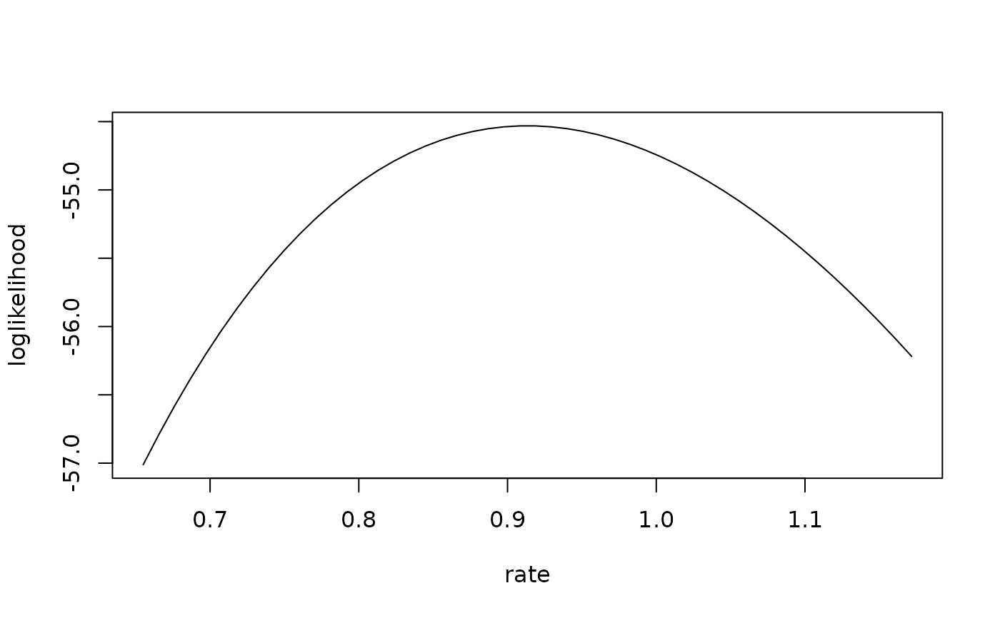
llplot(fite, col = "red", fit.show = TRUE)
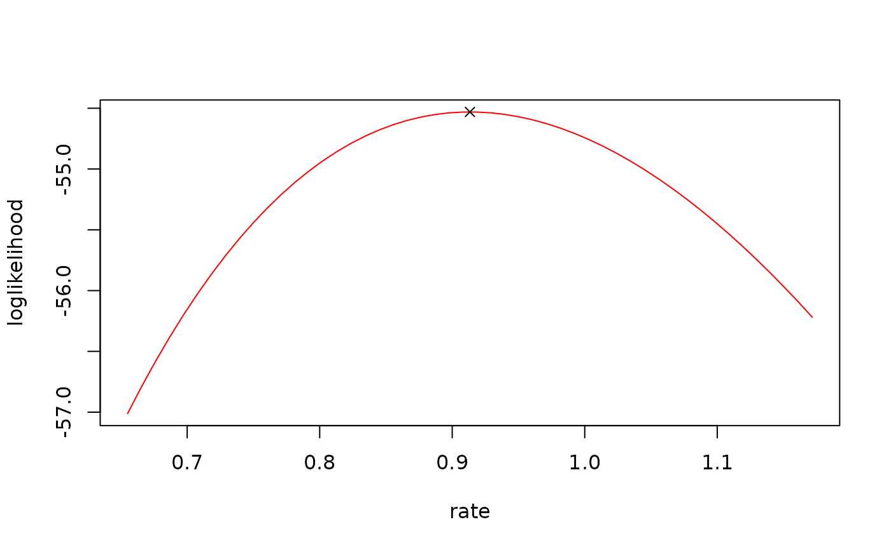
llplot(fite, col = "red", fit.show = TRUE, loglik = FALSE)
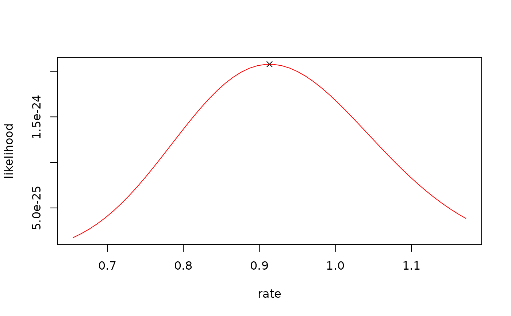
# (2) a distribution with two parameters
#
data(groundbeef)
serving <- groundbeef$serving
fitg <- fitdist(serving, "gamma")
llplot(fitg)
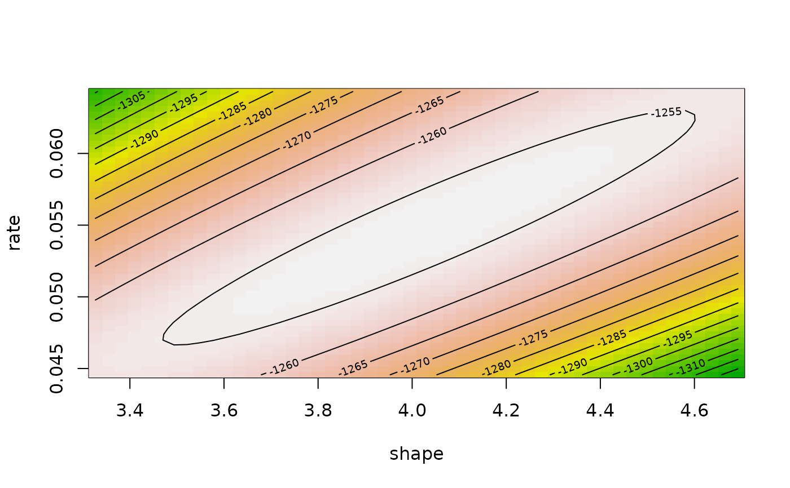
# \donttest{
llplot(fitg, expansion = 2)
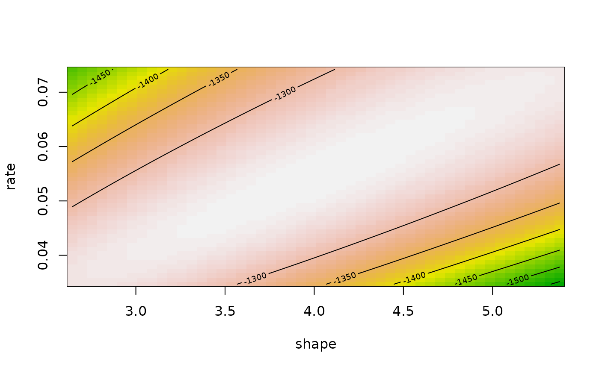
llplot(fitg, pal.col = heat.colors(100), fit.show = TRUE)
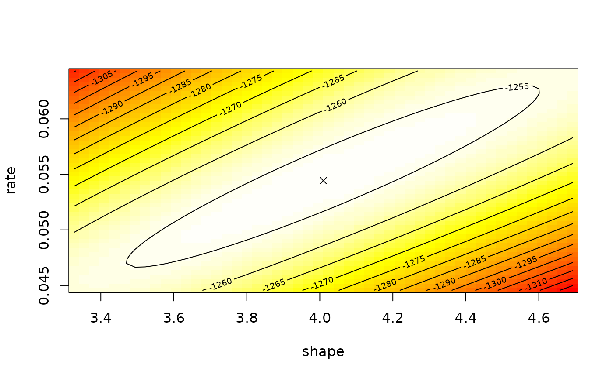
llplot(fitg, back.col = FALSE, nlev = 25, fit.show = TRUE)
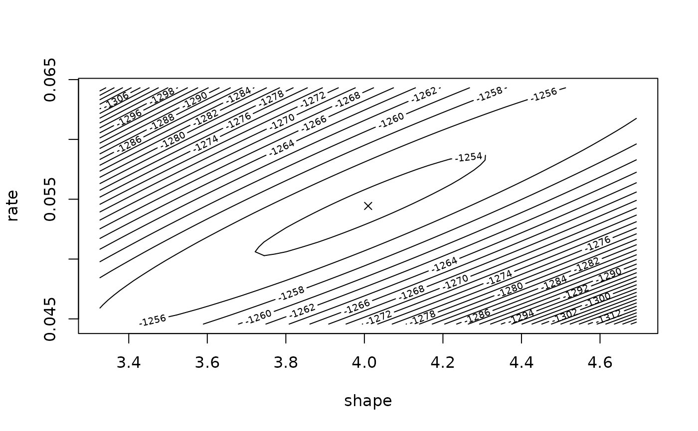
# }
# (3) a distribution with two parameters with one fixed
#
fitg2 <- fitdist(serving, "gamma", fix.arg = list(rate = 0.5))
llplot(fitg2, fit.show = TRUE)
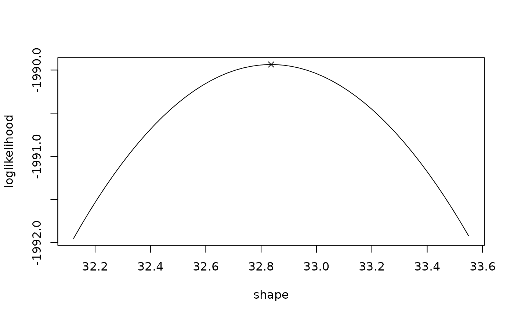
# (4) a distribution with three parameters
#
# \donttest{
data(endosulfan)
ATV <-endosulfan$ATV
library("actuar")
fBurr <- fitdist(ATV, "burr", start = list(shape1 = 0.3, shape2 = 1, rate = 1))
llplot(fBurr)
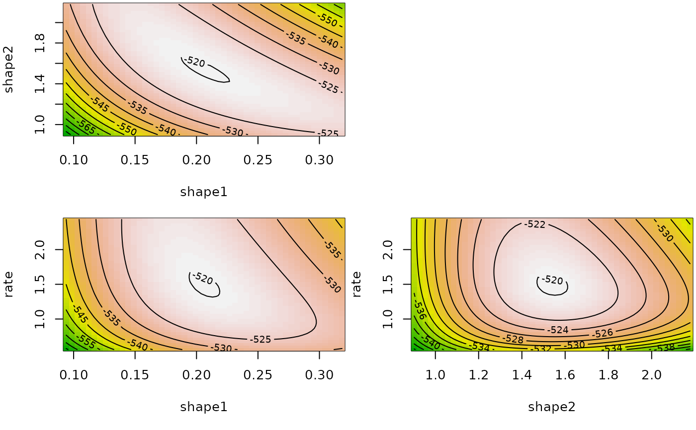
llplot(fBurr, back.col = FALSE, fit.show = TRUE, fit.pch = 16)
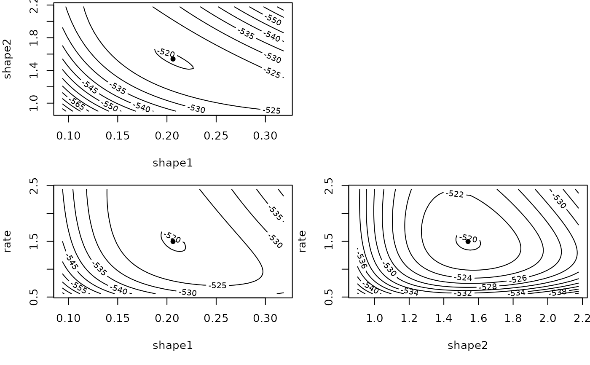
llplot(fBurr, nlev = 0, pal.col = rainbow(100), lseq = 100)
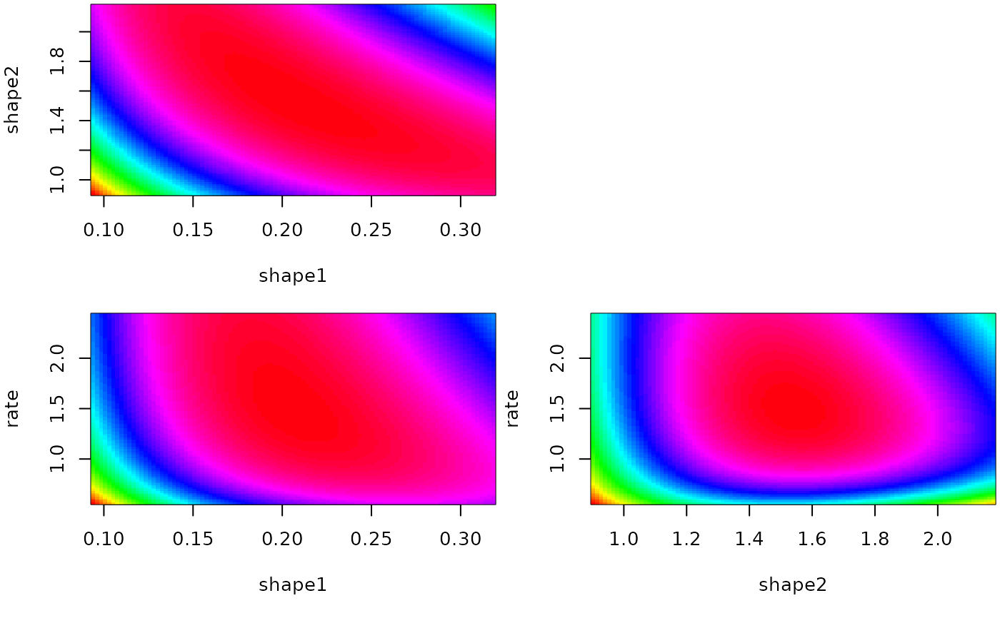
# }
# (5) a distribution with two parameters fitted on censored data
#
data(salinity)
fsal <- fitdistcens(salinity, "lnorm")
llplot(fsal, fit.show = TRUE)
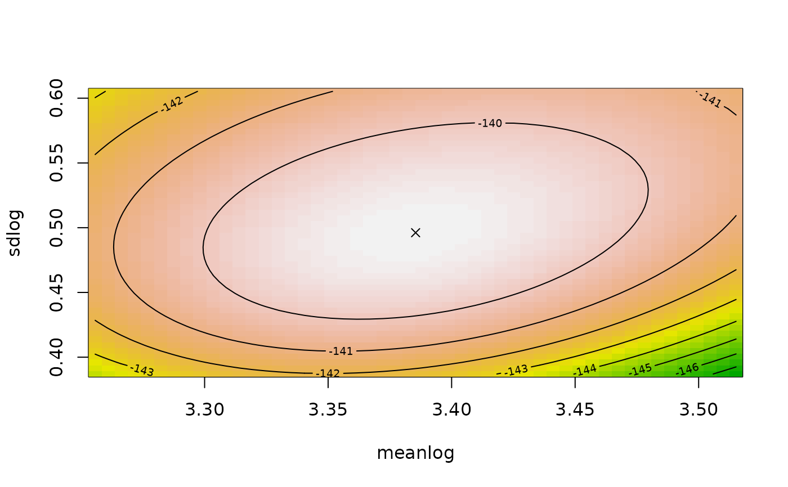
llplot(fsal, fit.show = TRUE, loglik = FALSE)